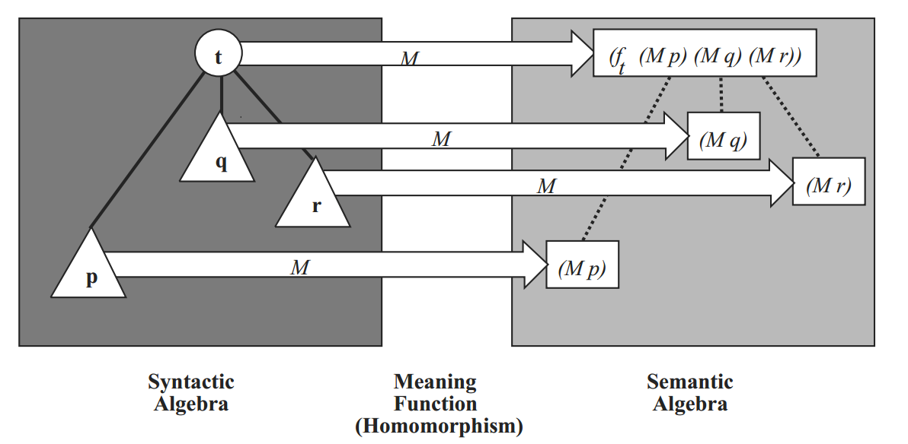

Software and Programming Language Theory
Denotational semantics
Domain theory
Resumptions
Some non-trivial parts of programming language semantics
- Possible non-termination. Some languages allow possibly-infinite loops. Languages without non-termination have rather simple semantics.
Operational semantics: sequence of steps form the directed graph (execution trace), non-termination is represented as a loop in graph.
- Non-determinism. In some languages (for example, C) the order of execution of some expressions (e.g. the evaluation order of arguments) is unspecified. Furthermore, threads parallel programming model is essentially non-deterministic.
Operational semantics: evaluation relations are many-valued.
Denotational semantics: Literature
R.W. Sebesta. Concepts of Programming Languages, 2012. Section 3.5.2. Denotational semantics (pp. 142–147) — concise practical introduction, good for getting first impression.
F.A. Turbak, D.K. Gifford. Desing Concepts in Programming Languages, 2008. Section 4. Denotational semantics, Section 5. Fixed Points. (pp. 113–204)
D.A. Schmidt. Denotational Semantics: A Methodology for Language Development. 1997. A monograph on denotational semantics.
N.S. Papaspyrou. A Formal Semantics for the C Programming Language. 1998. PhD thesis.
D.S. Scott. Logics and programming languages. 1977 doi:10.1145/359810.359826
1976 ACM Turing Award Lecture. The creator of domain theory and denotational semantics describes the history and the essence of the theory to wide audience.
Ю.Л. Ершов.
- Непрерывные решетки и A-пространства // Докл. АН СССР. — 1972. — Т. 207, No 3. — C. 523–526.
- Теория A-пространств // Алгебра и логика. — 1973. — T. 12, No 4. — C. 369–416.
Denotational semantics
The core idea of denotational semantics is compositionality. «The meaning of the whole is composed out of the meaning of the parts». Main parts:
Syntactic algebra — abstract syntax representation, AST in our notation. Describes the syntax of the program.
Semantic algebra — a collection of semantic domains along with functions that manipulate these domains. Models the meaning of program phrases. Usually the meaning of a program is an element of a function domain that maps context domains (analogue of configuration space in operational semantics) to an answer domain (e.g. Int domain for programs which compute some integer value).
Meaning function maps the elements of the syntactic algebra to their meanings in the semantic algebra.
Meaning function
Meaning function is desired to be homomorphic under the AST composition. E.g. if we have some AST node t = t(t1, t2, …, tk) and globally defined meaning function M then:
M(t) = ft(M(t1), M(t2), …, M(tk)),
where ft is a function over the semantic domain determined by the syntactic class of t. 
Meaning function definition
The usual notation for meaning function is · syntax-domain. The body of the meaning function is usually defined in terms of untyped lambda-calculus with some syntactic sugar:
- conditional operator if … then … else with condition as a (decidable) predicate over the semantic domain
- pattern matching operator match ▷ pattern1 ↦ result1 … end
- structural recursion: function can recursively call itself with arguments which are the structural parts of the original arguments
Example: Imp’
Simple imperative language with arithmetical and boolean expressions, assignment, conditional operator and loop.
Abstract syntax (omitting the operator precedence and lexical structure):
Program = Statement "return" VariableName
Statement = VariableName "=" ArithmeticalExpression
| "skip"
| Statement (";" | "\n") Statement
| "if" "(" BooleanExpression ")" "{ " Statement " } else { " Statement " }"
| "while "(" BooleanExpression ")" "{ " Statement "}"
ArithmeticalExpression = VariableName
| IntegerNumber
| "sqrt" ArithmeticalExpression
| "-" ArithmeticalExpression
| ArithmeticalExpression ("+" | "-" | "*" | "/" | "%") ArithmeticalExpression
BooleanExpression = ArithmeticalExpression ("<" | ">" | "==") ArithmeticalExpression
| "!" BooleanExpression
| BooleanExpression ("&&" | "||" | "^^")Imp’ programs
a,b,care the quadratic equation coefficients.
d = sqrt(b*b - 4*a*c)
x1 = (-b + d) / 2*a
x2 = (-b - d) / 2*a
if (x1 > x2) {
res = x1
} else {
res = x2
}
return res- Primality test for
n. Returns0ifnis prime, otherwise returns minimalndivisor.
bound = sqrt(n)
i = 2
divisor=0
while (i < bound && divisor == 0) {
if (n % i == 0) { divisor = n } else { skip };
}
return divisorNaive denotational semantics
Semantic domains
Int — integer numbers with addition, subtraction, division, modulus and integral approximation to square root and boolean-valued comparison operators (usually you want integer numbers mod 232 or 264, but our language supports big integers).
Bool — boolean values (true, false) with logical operations.
Expression semantics (without variables)
· AE : ArithmeticalExpression → Int
IntegerNumber(i)AE = iIntegerNumber
sqrt(e)AE = [√eAE]
− eAE = − eAE
e1 aop e2AE = opAE-aop(e1AE, e2AE) [e.g. AE-aop = mod]
Naive denotational semantics
Boolean expression semantics
abop — arithmetical-boolean operator, bbop — boolean-boolean operator.
· BE : BooleanExpression → Bool
e1 abop e2BE = abop(e1AE, e2AE)
!bBE = ¬b
b1 bbop b2BE = bbop(b1BE, b2BE)
Environments
Expressions have read-only access to variables. It is represented in terms of environment (additional argument to the meaning function).
Semantic domain: VariableState ≡ Identifier → Int⟂, Int⟂ = Int ∪ { ⟂ } with bottom (⟂) value representing undefined variable state. We will discuss this construction later, for now let us just state that f(x, ⊥) = f(⟂,x) = ⟂ for all defined functions.
Update meaning functions:
· AE : VariableState → ArithmeticalExpression → Int⟂
All previously defined cases are updated to pass an environment to nested functions, for example:
–e = λ env . – e(env)
Now we can define the variable getter expression: Identifier(I) = λ env. env(I)
Boolean expressions also depend on variable values. Previously defined cases must me updated.
· BE : VariableState→BooleanExpression → Bool⟂
Exceptions
Remember that we have three operators (/, %, sqrt) which are not universally defined over the integer numbers.
Convenience function:
withLeft : (f : X → Y) → X + Error → Y + Error
withLeft(f, x) = match(x)
▷ inl a ↦ f(a)
▷ inr e ↦ e
end
Semantic domains:
- errors: Error = { div-by-zero, sqrt-from-negative }
- domain sum constructor: X + Error are the values of either X or Error, with constructor inl converting X values to sum, constructor inr converting Error values to the sum.
Meaning functions:
· AE : VariableState → ArithmeticalExpression → Int⟂ + Error
· BE : VariableState → BooleanExpression → Bool⟂ + Error
Example meaning function update:
–e = λ env . withLeft(λ x. –x, e(env))
Statement and program semantics
Program
— receive the arguments and run statements. If statements computed without an error, get the return value.
· P : VariableState → Int⊥ + Error
s1; return I = λargs.withLeft(λenv.env(I), s1(args))
Statement
Statements manipulate the variable environment not as a read-only environment, but as a read-write state.
· S : VariableState → VariableState + Error
skip = λ env. inl(env)
s₁ ; s₂ = λ env. withLeft(s₂, s₁(env))
I = e = λ env. withLeft(λ i. (λ J. if J=I return i else return env(J)), e(env))
Statements (2)
Let us adopt two shorthand notations for withLeft:
left composition: x >>= y ≡ withLeft(y, x)
left variable binding: a ← b; S ≡ withLeft(λa. S, b)
if b1 st sf = λenv.b′ ← b1(env);
if (b′=Booltrue) st(env)
else sf(env)
Independent execution branches in legacy code with automated static analysis tools
Example application of denotational semantics
Task
Transform the existing legacy single-dimensional thermal-hydraulics code. Code is written in Fortran, memory is statically distributed.
Prove the correctness of the parallel execution.
Scheme of the solution
- Describe the formal semantics of the code.
- Expand the non-trivial syntactic constructions (partial evaluation).
- Transform the code to the static single assignment form (SSA).
- Define the dynamic semantics of code (in terms of substitution).
- Transform code to the model of dynamical concurrent exection.
- Show the correctness of the transformation (abstract interpretation).
- Schedule tasks statically.
Code structure
Thermal-hydraulics system model is a graph with differently-typed nodes (pipes, pumps, etc.). Objects have different properties (pressure, temperature). All properties of the same type are stored in separate array. Arrays are mapped to common blocks to synchronize with external modules of the whole system.
Code is generated automatically based on thermal-hydraulical system model. Main function consists of the sequence of stages, each stage is repeated for each of 7 subsystems which compute the updated values for some related parameter groups, in separate lines of code for each object.
Mapping of variables to common blocks is specified in header files.
In total for a real model (about 2000 objects) there are 424 000 lines of code in subset of Fortran.
Previous work
- we tried running computations for each subsystem in separate process
- for each stage and for each subsystem we select memory blocks which are read and written at that stage
- before each stage processes synchronize required block values
Result: subsystems are coarse-grained, stages are fine-grained with data dependencies at subsystem boundaries, almost no improvement in parallel distributed execution mode.
Fortran subset syntax
Header files
CHARACTER*1 G03th_z1
COMMON/global03th_z1/G03th_z1(0:819199)
CHARACTER*1 G14
COMMON/global14/G14(0:3276799)
CHARACTER*1 G04th_z1
COMMON/global04th_z1/G04th_z1(0:819199)
CHARACTER*1 G15_z1
COMMON/global15_z1/G15_z1(0:1638399)
REAL*8 chkfim
EQUIVALENCE (chkfim,G14(46632))
LOGICAL*1 th_pumpcav_1(4)
EQUIVALENCE (th_pumpcav_1,G03th_z1(78992))
REAL*8 thdfpp1_1(563,2)
EQUIVALENCE (thdfpp1_1,G15_z1(686920))Fortran subset syntax
Header files
<head> ::= (<head_decl> | <head_comm> | <head_equiv>)+ ;
// Variable declaration:
<head_decl> ::= <type> <identifier> <length>?;
// Common block declaration:
<head_comm> ::= "COMMON/" <identifier> ("/" <identifier>)*
"(" <positiveLiteral> ":" <positiveLiteral> ")";
// Variable mapping
<head_equiv> ::= "EQUIVALENCE" "(" <identifier> "," <identifier>" "(" <positiveLiteral> ")" ")"
<type> ::=
"CHARACTER" "*" <positiveLiteral>
| "REAL" "*" <positiveLiteral>
| "INTEGER" "*" <positiveLiteral>
| "LOGICAL" "*" <positiveLiteral>Fortran subset syntax
Source code files
CALL ysfpp5t( 202, 1, fwpflowppv_1, fwfpp1_1, fwfpp2_1,
fwdfpp1_1, fwdfpp2_1, fwdfpp1_fi_1, fwdfpp2_fi_1,
y1mtmp(862 ), y1mtmp( 863 ), - y1mtmp( 1054 ) * fwdtt_1,
- y1mtmp( 1055 ) * fwdtt_1, fwdvgpnt_1( 13 ), fwdvgpnt_1( 14 ),
fwdlpnt_1( 13 ), fwdlpnt_1( 14 ), fwfipp1_1( 1 ), fwfipp2_1(1 ),
fwfpntpnt1_1( 1 ), fwfpntpnt2_1( 1 ), fwpflowpp_1,
fwzpp_1( 1 ), fwdtt_1, kf0 )
CALL ysfpp5t( 202, 2, fwpflowppv_1, fwfpp1_1, fwfpp2_1,
fwdfpp1_1, fwdfpp2_1, fwdfpp1_fi_1, fwdfpp2_fi_1,
y1mtmp( 863 ), y1mtmp( 864 ), - y1mtmp( 1055 ) * fwdtt_1,
- y1mtmp( 1056 ) * fwdtt_1, fwdvgpnt_1( 14 ), fwdvgpnt_1( 15 ),
fwdlpnt_1( 14 ), fwdlpnt_1( 15 ), fwfipp1_1( 2 ), fwfipp2_1( 2 ),
fwfpntpnt1_1( 2 ), fwfpntpnt2_1( 2 ), fwpflowpp_1,
fwzpp_1( 2 ), fwdtt_1, kf0 )
CALL ysfpp5t( 202, 3, fwpflowppv_1, fwfpp1_1, fwfpp2_1,
fwdfpp1_1, fwdfpp2_1, fwdfpp1_fi_1, fwdfpp2_fi_1,
y1mtmp( 850 ), y1mtmp( 851 ), - y1mtmp( 1042 ) * fwdtt_1,
- y1mtmp( 1043 ) * fwdtt_1, fwdvgpnt_1( 1 ), fwdvgpnt_1( 2 ),
fwdlpnt_1( 1 ), fwdlpnt_1( 2 ), fwfipp1_1( 3 ), fwfipp2_1( 3 ),
fwfpntpnt1_1( 3 ), fwfpntpnt2_1( 3 ), fwpflowpp_1,
fwzpp_1( 3 ), fwdtt_1, kf0 )
CALL ysfpp5t( 202, 4, fwpflowppv_1, fwfpp1_1, fwfpp2_1, fwdfpp1_1, fwdfpp2_1, fwdfpp1_fi_1, fwdfpp2_fi_1, y1mtmp( 852 ), y1mtmp( 853 ), - y1mtmp( 1044 ) * fwdtt_1, - y1mtmp( 1045 ) * fwdtt_1, fwdvgpnt_1( 3 ), fwdvgpnt_1( 4 ), fwdlpnt_1( 3 ), fwdlpnt_1( 4 ), fwfipp1_1( 4 ), fwfipp2_1( 4 ), fwfpntpnt1_1( 4 ), fwfpntpnt2_1( 4 ), fwpflowpp_1, fwzpp_1( 4 ), fwdtt_1, kf0 )
CALL ysfpp5t( 202, 5, fwpflowppv_1, fwfpp1_1, fwfpp2_1, fwdfpp1_1, fwdfpp2_1, fwdfpp1_fi_1, fwdfpp2_fi_1, y1mtmp( 851 ), y1mtmp( 854 ), - y1mtmp( 1043 ) * fwdtt_1, - y1mtmp( 1046 ) * fwdtt_1, fwdvgpnt_1( 2 ), fwdvgpnt_1( 5 ), fwdlpnt_1( 2 ), fwdlpnt_1( 5 ), fwfipp1_1( 5 ), fwfipp2_1( 5 ), fwfpntpnt1_1( 5 ), fwfpntpnt2_1( 5 ), fwpflowpp_1, fwzpp_1( 5 ), fwdtt_1, kf0 )
CALL ysfpp5t( 202, 6, fwpflowppv_1, fwfpp1_1, fwfpp2_1, fwdfpp1_1, fwdfpp2_1, fwdfpp1_fi_1, fwdfpp2_fi_1, y1mtmp( 853 ), y1mtmp( 854 ), - y1mtmp( 1045 ) * fwdtt_1, - y1mtmp( 1046 ) * fwdtt_1, fwdvgpnt_1( 4 ), fwdvgpnt_1( 5 ), fwdlpnt_1( 4 ), fwdlpnt_1( 5 ), fwfipp1_1( 6 ), fwfipp2_1( 6 ), fwfpntpnt1_1( 6 ), fwfpntpnt2_1( 6 ), fwpflowpp_1, fwzpp_1( 6 ), fwdtt_1, kf0 )Fortran subset syntax
Source code
<program> ::= <header> <include> <preliminary>* <statements> "END"
<header> ::= ("SUBROUTINE" | "FUNCTION") identifier ("(" <identifiers> ")")?
<include> ::= "INCLUDE" "'" <identifier> ".h'"
<preliminary> ::= <type> <declarators> | "DATA" <dataDeclarators>
<statements> ::= <statement> <statement>*;
<statement> ::=
<lvalue> "=" <expression>
| <positiveLiteral> "CONTINUE"
| "CALL" <identifier> "(" <expressions> ")"
| "IF" "(" <expression> ")" "THEN"? <statements>
("ELSE" "IF" "(" <expression> ")" "THEN" <statements> )*
("ELSE" <statements>)?
"END IF"
| "DO" <identifier> = <expression> "," <expression> ("," <integerLiteral>)?
<statements>
"END DO"
| "DO" "WHILE" "(" <expression> ")" <statements> "END" "DO"
| "RETURN"
Fortran subset syntax
Source code
Infix operators priority is irrelevant in our dynamical semantics models.
<lvalue> ::= <identifier> ("(" <expressions> ")")?
<expression> ::=
<simple_expression> <binop> <expression>
| <simple_expression>
<binop> ::= ".EQ." | ".NE." | ".GE." | ".LE." | ".LT." | ".GT." | ".AND." | ".OR."
| "+" | "-" | "/" | "**" | "*"
<unop> ::= ".NOT." | "-"
<simple_expression> ::=
"(" <expression> ")"
| <literal>
| <identifier>
| <identifier> "(" <expressions> ")"
| <identifier> "(" ")"
| <unop> <expression>Model of dynamical concurrent program execution
Modifier (extension) of static and dynamic denotational semantics for the existing programming languages.
Statements =
computec- s1
;s2 - v =
spawnt, c waitv, m
Requirement: computations are purely functional (no global modifiable state)
Property (theorem): correctness of the parallel execution.
Vasenin V. A., Krivchikov M. A. A model of dynamical concurrent program execution // Programming and Computer Software. — 2013. — Vol. 39, no. 1. — P. 1–9.
Fortran subset static formal semantics
Identifiers are uniquely mapped to the block in which it is mapped.
Location : identifier → MemoryBlock × Offset × Size
Memory blocks are annotated with non-negative number (version). Version is increased at the time of the assignment.
Classical intermediate representation: SSA (static single assignment form).
SSA defines mutable variables as a sequence of immutable values.
Version : MemoryBlock × Offset × Size → N
Local variables may be represented in terms of the separate memory block.
Static formal semantics transformation
- Replace function calls with function code, substitute arguments, allocate memory for local variables. Simple functions can be replaced by “multiple-assignment” operators with special functional symbols.
- Unroll
DOloops with constant boundaries. - Replace
DO WHILEloops andIFconditional operators with “multiple-assignment” operators. - Replace identifiers with triples MemoryBlock × Offset × N
I₁ = f(I₂, …, Iₙ)
(Location I₁, Version (Location I₁)+1) := f((Location I₂, Version(Location I₂)), …,
(Location Iₙ, Version(Location Iₙ)))
Version[Location I₁] ← Version[Location I₁] + 1
Local variables are stored in separate memory block.
Static formal semantics
Operator of multiple assignment and special functional symbol
IF ( f_temp1 .GT. thhgconv ) THEN
htcarg1 = f_temp1 * fipnt + thhgconv * ( kf1 - fipnt )
mode = 6
ELSE
htcarg1 = thhgconv
mode = 15
END IF(htcarg1, mode) = IF1234(f_temp1, thhgconv, fipnt, kf1)
Dynamic semantics
specified by means of symbolic substitution:
In result of static semantics transformation program is converted into sequence of multiple-assignment operators with expressions or functional symbols in the right part.
Dynamic semantics environment stores static semantics representation of expressions (symbolic computation):
I₁ = (G₁, O₁, V₁) := f₁(…) … Iₙ = (Gₙ, Oₙ, Vₙ) := fₙ(…)
J = (Gⱼ, Oⱼ, Vⱼ) := g(I₁, …, Iₙ) ≡ J = (Gⱼ, Oⱼ, Vⱼ) := g(f₁(…), …, fₙ(…))
Independent computation branches
Independent computation branches are separated by means of representing assignment operators and variable dereference in terms of dynamic concurrent program execution model.
Each assignment operator is executed in separate logical computation thread.
Dynamic semantics environment for each version of memory block location stores an identifier for the thread and index of the result in multiple-assignment.
I₁ = (G₁, O₁, V₁) := T₁, k₁
…
Iₙ = (Gₙ, Oₙ, Vₙ) := Tₙ, kₙ
J = (Gⱼ, Oⱼ, Vⱼ) := g(I₁, …, Iₙ) ≡
J = (Gⱼ, Oⱼ, Vⱼ) := spawn g [ I₁ := wait T₁, k₁; …; Iₙ := wait Tₙ, kₙ ]
Equivalence between original dynamic semantics and concurrent dynamic semantics is checked directly with sequential execution mode. Resulting expressions for all memory locations must be the same for non-concurrent dynamic semantics and concurrent dynamic semantics in sequential mode.
Static scheduling
In contrast with previous approach, parallel execution in this case is fine-grained. Because target system is distributed as a complete technological platform, we can use static thread scheduling:
Dynamical concurrent execution model runs before compiling; core of the model provides static scheduler.
In terms of static semantics for each statement we assign an index of parallel process.
Depending on the used concurrent execution implementation, “spawn” and “wait” statements are translated to the sequence of implementation-specific functions.
Cost model
To schedule threads effectively we need the additional information on the expected operation timings.
Model parameters:
- Binary and unary numeric operation cost.
- Functional symbol cost (upper bound on loop body cost).
- Cost of data transfer (only if data transfer is required).
Scheduler environment contains mapping between (physical) processes and (logical) computation threads.
ComputationCost : Computation → N
MessageCost : Schedule × TId × TId → N
Cost(S, J = (Gⱼ, Oⱼ, Vⱼ) := spawn g [ I₁ := wait T₁, k₁, ..., Iₙ := wait Tₙ, kₙ ])
= ComputationCost(g)
+ Σᵢ MessageCost(g, Tᵢ)Optimal mapping problem is NP-hard, it is impossible to find true optimal solution in practice. But practice doesn’t require optimal solution, “fast enough” is enough.
Examples
Sequential execution (baseline)
- Binary and unary operation const — 1.
- Functional symbol cost — computed.
- Data transfer cost — 0.
Number of processes = 1
MPI
- Binary and unary operation cost — 1.
- Functional symbol cost — computed.
- Data transfer cost — 1000 (mpi_ping on customer hardware)
Number of processes = 2..48 (customer hardware)
Threads
- Binary and unary operation cost — 1.
- Functional symbol cost — computed.
- Data transfer cost — 1.
Number of processes = 2..60 (Xeon Phi)
MALT
future many-core CPU architecture, developed at Faculty of Physics, Lomonosov Moscow State University, in cooperation with NII Kvant.
- hardware support of featherweight threads (F/E bits)
- no hardware floating-point unit
- costs are my speculative assumptions based on workshop reports of developers
- Binary and unary operation cost — 1..200 (SoftFloat).
- Functional symbol cost — computed.
- Data transfer cost — 1.
Number of processes: ~100-1000.
Hypotheses: overhead of software-emulated floating point operation is compensated by high level of parallelism and low cost of data transfer
Future work directions
- pack consequtive data transfers (MessageCost : Schedule × TId × TId × Size → N = C + k*Size)
- add SIMD operations into cost model
- local microoptimization and postoptimization for code
- implement scheduling algorithm and run simulations